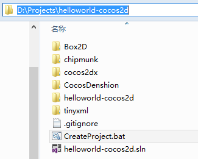
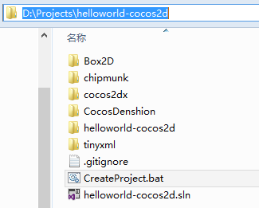
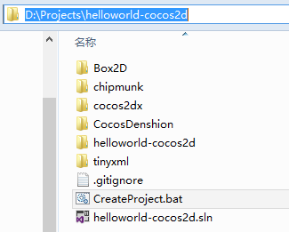

After Create Project we have a HelloWorld cocos2dx project now. Let's take a brief tour of it.

The 5 pictures is need by metro style app.
Logo.png
SmallLogo.png
SplashScreen.png
StoreLogo.png
WideLogo.png
In essence, we are writing a metro applications, so in accordance with the metro app development standards, our program is to start from the main function in main.cpp.
[Platform::MTAThread]
int main(Platform::Array<Platform::String^>^)
{
try
{
AppDelegate app;
auto frameworkViewSource = ref new CCApplicationFrameworkViewSource();
Windows::ApplicationModel::Core::CoreApplication::Run(frameworkViewSource);
}
catch(COMException^ e)
{
switch (e->HResult)
{
case kCCExceptionNoSupportDX11:
// no video card support DirectX 11
CCMessageBox("You don't have any video card support DirectX 11.", "Error");
break;
default:
break;
}
}
return 0;
}
The AppDelegate is a subclass of CCApplication. In cocos2dx, a instance of CCApplication responses to initialize some global resources and manage application life circle.
virtual bool initInstance();
/**
@brief Implement CCDirector and CCScene init code here.
@return true Initialize success, app continue.
@return false Initialize failed, app terminate.
*/
virtual bool applicationDidFinishLaunching();
/**
@brief The function be called when the application enter background
@param the pointer of the application
*/
virtual void applicationDidEnterBackground();
/**
@brief The function be called when the application enter foreground
@param the pointer of the application
*/
virtual void applicationWillEnterForeground();
In AppDelegate::initInstance() we create view and set the design resolution.
mainView->setDesignResolution(480, 320);
In AppDelegate::applicationDidFinishLaunching(), we get the CCDirector and start run our first Scene(HelloWorldScene). So the AppDelegate is the real enter point of the game.
bool AppDelegate::applicationDidFinishLaunching()
{
// initialize director
CCDirector *pDirector = CCDirector::sharedDirector();
pDirector->setOpenGLView(&CCEGLView::sharedOpenGLView());
// turn on display FPS
pDirector->setDisplayFPS(false);
//pDirector->setDeviceOrientation(kCCDeviceOrientationLandscapeLeft);
// set FPS. the default value is 1.0/60 if you don't call this
pDirector->setAnimationInterval(1.0 / 60);
// create a scene. it's an autorelease object
CCScene *pScene = HelloWorld::scene();
// run
pDirector->runWithScene(pScene);
return true;
}
Now, let's talk HelloWorldScene.
HelloWorldScene key method is init(), is to build the various elements in the scene. Each time you create the element will use the this->addChild() function to insert, that is placed the element in this scene, the second parameter is the draw order.
bool HelloWorld::init()
{
//////////////////////////////
// 1. super init first
if ( !CCLayer::init() )
{
return false;
}
CCSize size = CCDirector::sharedDirector()->getWinSize();
// 2. add a label shows "Hello World"
// create and initialize a label
CCLabelTTF* pLabel = CCLabelTTF::labelWithString("Hello World", "Arial", 24);
// ask director the window size
// position the label on the center of the screen
pLabel->setPosition( ccp(size.width / 2, size.height - 50) );
// add the label as a child to this layer
this->addChild(pLabel, 1);
// 3. add "HelloWorld" splash screen"
CCSprite* pSprite = CCSprite::spriteWithFile("HelloWorld.png");
// position the sprite on the center of the screen
pSprite->setPosition( ccp(0, 0));
pSprite->setAnchorPoint(ccp(0,0));
// add the sprite as a child to this layer
this->addChild(pSprite, 0);
return true;
}